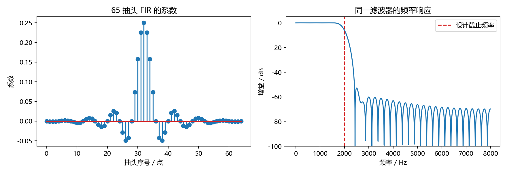
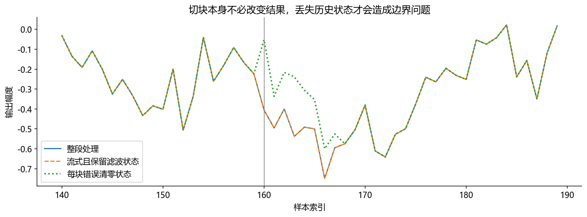

看图理解 · 跟着推演 · 对照真实结果
第07课 · 三点平均为什么能滤波
先建立直觉，再逐节讲原理、代码与结果；章节目录可定位学习。用同一个三点平均算例，讲清卷积、频率选择、延迟和分块状态。
从直觉、原理，到代码与结果
本版保留导览小实验，增加教材逐节精讲、代码分段阅读和结果解释。三个项目另有本次真实模型短推理，第 12 课增加实际训练曲线。按右侧小节分次学习即可，不必一次看完。
完整文字、规范公式和注释代码仍在上方“读完整图文”。视频中的历史报告、教学算例与本次实测分别标明，短演示不冒充完整重训或设备验收。
先修：采样、正弦波、数组下标与频谱
- 手算三点平均输出
- 区分幅值变化与频率选择
- 解释实时滤波为何需要历史状态
本课覆盖清单与证据范围
- 本课先拿下什么
- 1. 从一杯晃动的水理解低通，但别把类比当公式
- 2. 手算：三个历史采样怎样变成一个新采样
- 3. 频率响应、相位和群延迟分别回答什么
- 4. 实验：真正设计一个低通，再看它改了哪些成分
- 5. IIR：用上一时刻的输出参与计算
- 6. EQ 与压缩器：一个按频率调，一个按电平调
- 7. 常见失败，按这个顺序排查
- 8. 练习、参考答案与实习作业
结果从哪里来
- 导览中的小算例实际执行
- 原教材逐节讲解；正文代码/公式/图保留
合成正弦与三点平均教学实验，不代表语音降噪效果；完整滤波设计、IIR稳定性、EQ与压缩器继续见原课。
新版视频时间轴已改变，单独记录续播位置；学习计划的完成勾选保持不变。
跟着运行：注释代码、实际输出与结果图
下面代码在生成本站时实际执行。这里只是教学小实验，不是完整模型训练或业务设备测评。
import numpy as np
fs = 16000
# 两个频率一起输入，观察滤波不是整体调小音量
t = np.arange(1600) / fs
x = np.sin(2*np.pi*500*t) + 0.3*np.sin(2*np.pi*6000*t)
h = np.ones(3) / 3 # 三个抽头的增益和为一
y = np.convolve(x, h, mode='full')[:len(x)]
# 按系数直接计算响应，避开开头的初始化暂态
freq = np.array([500., 6000.])
H = np.exp(-2j*np.pi*freq[:, None]*np.arange(3)/fs) @ h
print('500与6000 Hz增益/dB:', np.round(20*np.log10(abs(H)), 3))
print('线性相位延迟/ms:', 1000*(len(h)-1)/(2*fs))
# 一个尖峰经过滤波会扩散到三个采样
print('尖峰输出:', np.convolve([0, 0, 3, 0, 0], h)[:5])
本次实际输出
500与6000 Hz增益/dB: [ -0.112 -17.198] 线性相位延迟/ms: 0.0625 尖峰输出: [0. 0. 1. 1. 1.]

精讲中的代码、运行步骤与大图
代码片段用于逐行理解；真实运行结果仅限明确标注“本次实际”的部分。教材历史图保留原有实验范围。
代码精读 03 · 第1–10行
源码精读 / 教学片段，需配套环境与上下文，不等同于独立脚本。
import numpy as np
from scipy.signal import lfilter
x = np.array([0., 0., 3., 0., 0.])
# 三个系数之和为一：稳定的常量输入不会被放大。
h = np.ones(3) / 3
# 分母 [1.] 表示没有反馈，输出按输入长度截取。
y = lfilter(h, [1.], x)
print(y) # [0. 0. 1. 1. 1.]
assert np.allclose(y, [0, 0, 1, 1, 1])代码精读 05 · 第1–18行
源码精读 / 教学片段，需配套环境与上下文，不等同于独立脚本。
import numpy as np
from scipy.signal import firwin, lfilter, freqz
fs = 16000
t = np.arange(fs) / fs
# 低频目标与高频分量，便于分别检查保留和抑制。
x = np.sin(2*np.pi*500*t) + 0.3*np.sin(2*np.pi*6000*t)
# 截止频率以 Hz 输入；65 抽头的阶数为 64。
b = firwin(65, 2000, fs=fs)
y = lfilter(b, [1.], x)
# 直接从系数计算两个频率处的响应，不受启动暂态影响。
f, response = freqz(b, worN=[500, 6000], fs=fs)
print("两个频率的增益 dB：", 20*np.log10(np.abs(response)+1e-12))
print("理论群延迟 ms：", 1000*(len(b)-1)/(2*fs))
assert abs(response[0]) > 0.9
assert abs(response[1]) < 0.01
# 同一次运行保存系数与频响，图的参数与上面计算完全一致。代码精读 05 · 第19–36行
源码精读 / 教学片段，需配套环境与上下文，不等同于独立脚本。
from pathlib import Path
import matplotlib
matplotlib.use("Agg")
import matplotlib.pyplot as plt
plt.rcParams.update({"font.family": "Microsoft YaHei", "axes.unicode_minus": False})
f_all, h_all = freqz(b, worN=2048, fs=fs)
fig, axes = plt.subplots(1, 2, figsize=(11, 3.8))
axes[0].stem(np.arange(len(b)), b)
axes[0].set(title="65 抽头 FIR 的系数", xlabel="抽头序号 / 点", ylabel="系数")
axes[1].plot(f_all, 20*np.log10(np.maximum(abs(h_all), 1e-8)))
axes[1].axvline(2000, color="tab:red", ls="--", label="设计截止频率")
axes[1].set(title="同一滤波器的频率响应", xlabel="频率 / Hz", ylabel="增益 / dB", ylim=(-100, 5))
axes[1].legend()
fig.tight_layout()
out = Path("tutorial/figures/ch07_filter_response.png")
out.parent.mkdir(parents=True, exist_ok=True)
fig.savefig(out, dpi=160)
plt.close(fig)代码精读 05 · 第37–37行
源码精读 / 教学片段，需配套环境与上下文，不等同于独立脚本。
print("已保存运行图：", out.as_posix())结果读图 05 · 4. 实验：真正设计一个低通，再看它改了
原教材运行记录

原教材已存图 不是本次新测 先确认实验范围 再解释坐标与单位
结果读图 05 · 4. 实验：真正设计一个低通，再看它改了
原教材运行记录

原教材已存图 不是本次新测 先确认实验范围 再解释坐标与单位
结果读图 08 · 7. 常见失败，按这个顺序排查
原教材运行记录

原教材已存图 不是本次新测 先确认实验范围 再解释坐标与单位
闭卷自测：129抽头、16 kHz的对称线性相位FIR，群延迟是多少？
(129−1)/2=64采样；64/16000=0.004秒，即4毫秒。这不是整机总时延。
逐字讲稿 · 可定位回看
如果今天的气温图太抖，你可能看最近三天的平均值。曲线会平滑一些，但变化也会被拖后。音频的滑动平均同样依赖历史，不过不能因此把它当作万能降噪。
输入依次是 3、6、0，开始前的历史值都设为 0。第一次平均 3、0、0，输出 1。 第二次平均 6、3、0，输出 3；第三次平均 0、6、3，仍输出 3。
如果下一块处理时忘掉 6 和 3，重新从零开始，块边界处的结果就会不同。这就是流式处理为什么必须保存历史。 快速变化不一定是噪声，低频也不一定有用。滤掉高频可能同时损伤语音细节，必须先定义目标。
想象一条慢慢起伏的曲线上叠着密集的小锯齿。慢起伏代表五百赫兹，密集部分代表六千赫兹。今天不先背滤波器分类，而是让这两个分量经过同一条计算规则，观察发生什么。
频率表示每秒重复多少次，幅值表示变化有多大。很小的高频仍然是高频，很响的低频仍然是低频。请盯住图上的变化疏密，不要把波形高低误当成频率高低。
我们用三点平均做最小实验。它能说明平滑和频率选择，却不是专业语音降噪器。因为语音的擦音也有高频，低频又可能含风噪，按频率衰减并不自动知道哪些声音有用。
式子里的方括号是采样位置，不是乘法。第恩个输出，等于当前输入、前一个输入、前两个输入相加，再除以三。所有输入和输出仍然是相同单位的数字幅值。
拿零、零、三、零、零这五个数试一遍。第三个位置看到三、零、零，平均得一。第四个位置看到零、三、零，仍得一。第五个位置也是一，一个尖峰被分摊到三处。
输入开始以前我们暂定全为零，所以前两点存在初始化影响。不要把这个零历史约定忘掉。实际连续处理时，上一块末尾并不是零，这个细节稍后会决定边界是否出现错误。
把除以三分给三个输入，就得到三个相同系数，每个都是三分之一。每个系数对应一个延迟位置，通常称为抽头。三个抽头意味着最高延迟是两点，因此阶数是二，不是三。
如果输入一直是二，三个二乘各自系数再相加，稳定后仍是二。原因不是所有平均器都保音量，而是这三个系数之和恰好为一。改成三个一，稳定输出就会变成六。
给这条规则只输入一次单位脉冲，它只产生三个非零输出，所以叫有限冲激响应，也就是 FIR。名称描述的是脉冲影响持续多久，不是说任何输入音频只能输出三个点。
对于缓慢变化的波，相邻三个值通常比较接近。把它们平均，得到的值不会离原来的趋势太远。对于快速变化的波，相邻值可能一正一负，相加时就会部分抵消。
这个直觉解释了三点平均通常更容易保留低频。但不要把它理解成一道完美的门：它的频率响应存在波动，某些高频仍然通过。设计滤波器必须真正查看整条响应。
判断滤波不能只看时域曲线变得光滑。你还要问目标频率衰减了多少、干扰频率衰减了多少，以及两者在时间上是否被移位。平滑只是现象，响应才告诉我们选择性。
频率响应是在问：给定频率的正弦输入，稳定后幅度乘了多少，相位挪了多少。幅度比取二十倍常用对数，得到分贝。增益为一是零分贝，为零点五约是负六分贝。
注意这里比较的是幅度，所以用二十倍。若已经比较功率，就该用十倍。把幅度平方后还乘二十，等于重复计算一次，会把衰减报告得比实际大一倍。
接下来代码直接用三个系数计算五百赫兹和六千赫兹的响应。这样不需要从很短的输出里估计幅度，也避开开头还没有完整历史的暂态。打印值和波形图各回答一个问题。
前五行创建一千六百点，也就是零点一秒音频。时间数组是样点序号除以采样率，两个正弦共用它。这里没有读真实录音，因此后面的任何结论都只属于合成信号实验。
第六行生成三个三分之一。第七行完整卷积会多出两个尾部点，我们截到原输入长度，得到因果处理的这一段。不要随手换成居中的 same 模式后仍声称延迟定义完全不变。
后面构造每个频率在三个抽头位置的复指数，再与系数做内积。结果是两个复数响应，取模再换分贝。最后还打印尖峰例子，让你把刚才的手算与同一段程序核对起来。
先看横轴，它是秒；纵轴是归一化数字幅值。输出中的密集摆动变小，但慢起伏没有与输入完全重合。这里既有频率增益变化，也有滤波延迟，不能只用某一点的高度判断保真。
打印的五百赫兹增益接近零分贝，六千赫兹明显更低，但并非完全消失。三点平均的选择能力有限。若你的干扰恰好落在另一个频率，不能照搬这个结果。
开头少量点还受到零历史影响。要严谨测量，应该区分启动暂态和稳定部分。图中没有真人说话、房间或者设备误差，因此它只能验证这条计算规则，不能证明通话音质提升。
对称的奇数抽头 FIR 在适用频带具有线性相位，群延迟为抽头数减一再除二，单位先是采样点。三抽头对应一点，除以一万六千才转换成秒，即零点零六二五毫秒。
如果换成六十五抽头，群延迟变成三十二点，也就是两毫秒。这是滤波器本身的性质，与你是否使用很快的处理器不是同一回事。代码算得快，并不能把所需历史和预看抹掉。
整套应用还有录音缓存、分帧等待、模型上下文和播放缓存。面试时说清每一部分，比只报一个总数字更有用。响应为零处相位可能未定义，也不要机械解释那个位置的群延迟。
现在把音频每一百六十点切一块。第二块第一个输出仍然需要第一块末尾两个输入。若每块都当作一条新音频，程序会把那两个真实值替换成零，输出就与整段处理不同。
正确方法是保存滤波状态，或者把必要历史接到下一块前面，再丢掉重复结果。验证时把分块输出拼起来，与整段参考逐点比较，另外单独检查不足一整块的最后一段。
IIR 还会依赖历史输出，因此状态管理同样重要。离线前后向滤波可以使用未来数据，但不能因为看起来零相位，就冒充无需等待的实时实现。工具函数名称不能代替因果性分析。
暂停视频，计算一百二十九抽头、十六千赫兹的对称 FIR 群延迟。先求六十四点，再除以采样率，结果是四毫秒。若你直接回答一百二十九毫秒，说明点数与时间混在了一起。
今天的作业不是随便调到听起来舒服。请换一个干扰频率，记录两处频率增益；再比较整段与正确分块的最大误差。每次只改一个因素，保留图、参数和一段原因解释。
你需要记住卷积规则、增益口径和状态边界，能手算三点例子，能运行并修改代码。滤波、均衡、动态压缩是不同机制，完整文字课保留这些延伸内容，遇到具体问题再按目录深入。
三点平均只使用当前和过去两个输入，所以保存两点输入历史就能跨块运行。滤波器长度增加，所需输入历史也增加，但不会直接把以前的输出再喂回来。
IIR会把过去输出参与当前计算，因此用较少参数也能产生很长的响应。代价是反馈系数和数值精度需要更谨慎，不合适的极点位置可能让输出越滚越大。
不要把有限阶数理解为有限响应长度。检查一个滤波器时，先看差分方程有没有输出反馈，再看脉冲响应、频率响应和极点，而不只是看代码有几行。
先固定一条输入，用同一个滤波规则一次处理完成，保存参考输出。再把它分成一百六十、二百五十六、十七点等不规则块，每块延续历史状态，最后拼回输出。
比较最大绝对差、长度和块边界附近的波形。如果只有边界不一致，优先查历史保留与裁剪，而不是修改滤波系数。若每块独立滤波，前几个样点往往会重复出现启动瞬态。
还要测试空块、短于滤波器的输入、最后不足一块，以及新会话清空状态。整段等价不等于延迟为零，但它能先排除分块引入的计算错误。
你不需要先背完整的滤波器设计理论。本课结束时，应能解释“低通滤波为什么不是把音量整体调小”，手算一个三点平均滤波器，读懂频率响应，并说清 FIR、IIR、EQ 和动态压缩的区别。先修是数组、采样率、正弦波与 FFT；
建议分三次学习：直觉和手算 45 分钟，运行代码 60 分钟，改参数与写报告 60 分钟。
先记住一条主线：滤波器是一条输入序列到输出序列的规则；频率响应是用不同频率的正弦波去探测这条规则。 对线性时不变滤波器，这两种描述能够互相对应。
你拿着水杯走路，手的快速小抖动可以被柔软支架减弱，缓慢的位置变化仍能传到杯子。低通滤波也有类似效果：慢变化比较容易保留，快变化受到衰减。不过音频不是“数值小就是低频”。幅值为 0.01 的 6 kHz 正弦仍是高频，幅值为 0.8 的 100 Hz 正弦仍是低频。频率描述变化速度，幅值描述变化大小。
更重要的局限是：有些“噪声”也处于低频，例如空调振动和风噪；有些有用的语音信息在高频，例如部分擦音。低通不是万能降噪。滤波前先问干扰在哪个频带、目标需要保留什么，再决定频率选择。
名称：低通。操作：低频保留得多，高频变小。典型用途：重采样前抗混叠、抑制带外分量。不能由此推出：高频全是噪声。
名称：高通。操作：抑制低频和直流。典型用途：去直流、减小低频扰动。不能由此推出：能修复麦克风饱和。
名称：带通。操作：保留一段频带。典型用途：针对频段分析。不能由此推出：通过频段一定只有目标。
名称：陷波。操作：在窄频带强衰减。典型用途：固定频率电气干扰。不能由此推出：不会影响同频目标。
未出现的历史输入按零处理，因此 y[0]=0，y[1]=0，y[2]=1，y[3]=1，y[4]=1。一个尖峰被分摊到连续三个位置。你得到的不是“免费消除尖峰”：输出出现了时间扩展。若这一下本来就是重要的敲击声，它也会被改变。
这里 n、k 的单位都是采样点，h[k] 是无量纲增益，x 与 y 的幅值单位相同。如果输入是归一化 PCM，输出也不是突然变成帕斯卡。
这就是有限冲激响应 FIR：给它一个孤立的单位脉冲，输出只持续有限个采样。三个系数称为三个抽头，阶数是二，不要把“抽头数”和“阶数”写反。
h 是前馈系数；第二个参数 [1.] 表示没有反馈项。lfilter 返回与输入等长的一段输出，若想观察输入结束后的全部尾巴，
要额外补零。np.convolve(x,h,mode="full") 则直接返回完整卷积，长度为输入长度加系数长度减一。
自测：若把 h 改成 [1,1,1] 会怎样？它仍有平滑效果，但直流增益变成三，输出可能超过允许幅度。平滑不等于保持音量。
先看中文注释：三个系数之和为一：稳定的常量输入不会被放大。。这几行仍属于2. 手算：三个历史采样怎样变成一个新采样的同一处理链，输入变量沿用前一段，不是一个独立程序。
先看中文注释：分母 [1.] 表示没有反馈，输出按输入长度截取。；[0. 0. 1. 1. 1.]。断言把预期写成可失败的检查。通过只说明这一条件成立，不自动代表声音质量或全部场景合格。 打印是观测点。把这里的真实值与理论预期比较，若不一致应保留输出排错，而不是手工改成期望数字。
先看中文注释：三个系数之和为一：稳定的常量输入不会被放大。；分母 [1.] 表示没有反馈，输出按输入长度截取。；[0. 0. 1. 1. 1.]。断言把预期写成可失败的检查。通过只说明这一条件成立，不自动代表声音质量或全部场景合格。 打印是观测点。把这里的真实值与理论预期比较，若不一致应保留输出排错，而不是手工改成期望数字。
给滤波器输入 500 Hz 正弦，稳定后测输出幅值和相位；换成 1000 Hz，再测；逐一遍历，就能认识频率响应 H(f)。幅频响应回答“这个频率被乘了多少”；相频响应回答“它的周期相位挪了多少”。幅度图常用 20以十为底的对数lvert H(f)rvert，因为比的是幅值，不是功率。
例如 lvert Hrvert=0.5 对应约 −6.02 dB，lvert Hrvert=1 对应 0 dB。图上 −60 dB 表示非常小，不等于计算机中恰好为零。截止频率也不是一道无限陡直的门；通常要同时定义通带、过渡带、阻带及允许误差。
群延迟描述频率附近的包络延迟。在角频率单位为弧度/采样时：
结果单位为采样点。换成秒要除以采样率。对称的奇数抽头线性相位 FIR，理想群延迟为 （L-1）除以（2） 点；在响应为零等相位未定义的位置，不能机械解读数值。
例：65 抽头、16 kHz 的对称 FIR，群延迟为 32 点，即 2 ms。它不是整套应用的总时延，
采集缓存、分帧、模型预看和播放缓存还会继续增加时间。频谱幅值很漂亮，也可能不适合低时延通话。
从课程根目录 audio-course-zh 运行下方完整片段。它把图保存到 tutorial/figures/，不会自动打开窗口或播放声音。
这就是该片段同参数运行后的图：左侧系数关于中心对称，与线性相位相联系；右侧低频接近 0 dB，高频明显衰减。红线是设计截止频率，不是一条“过线立即归零”的边界。看右图时对照打印的 500 Hz 与 6000 Hz 增益，再联系前面算出的 2 ms 延迟。
本轮实际运行输出：500 Hz 约 −0.00046 dB，6000 Hz 约 −68.24 dB，理论群延迟为 2.0 ms。不同库版本可能有细微数值差异；重点是目标基本保留、高频显著衰减，以及延迟没有消失。
第一组正弦让你有一个应该保留的低频目标，第二组是希望抑制的高频成分。firwin 生成 65 个系数；fs=fs 使截止频率按 Hz 解释。若忘记 fs，却继续把 2000 当作 Hz，参数意义会出错。
本例还有一个常见面试陷阱：firwin 的单个 cutoff 按半幅度点定义，约为 −6 dB；不要把它默认成某些 IIR 设计中的半功率点 −3 dB。半幅度意味着功率约变成四分之一。比较两种滤波器时，先统一截止点、通带与阻带的定义，不能只让两边都写“2000 Hz”。
lfilter 是因果滤波：当前输出只看当前和过去输入。freqz 不需要等你把所有正弦都录一遍，它根据系数计算同一件事。断言只核验本例两个频率；不能据此宣称所有通带纹波、阻带与稳定性指标均满足产品要求。
此图来自已运行的 tutorial/code/beginner_labs.py 中 filter_and_room，结果见 tutorial/results/beginner_results.json。上图采用九点等权平均 FIR，不是本节 65 抽头 firwin 的即时输出；
二者都用于说明滤波，但系数与响应不同。左上看九个相同的抽头，右上看低频总体更容易通过以及明显旁瓣：平均滤波器并非理想低通，不能以为截止以上全部归零。左下三个反射脉冲与右下指数尾音也是两个独立模型，后面声学章节逐一解释。
读图时先找坐标轴：频率响应图的横轴是 Hz，脉冲响应图的横轴是时间或采样点，二者不能直接比较横向宽度。要区分“人为选择频率”与“传播过程产生拖尾”。观察过渡和旁瓣，再看相位或延迟；不要只截图衰减最明显的一段。
先看中文注释：低频目标与高频分量，便于分别检查保留和抑制。。arange按固定步长生成索引。若随后除以采样率，才把采样点编号换成秒。
先看中文注释：截止频率以 Hz 输入；65 抽头的阶数为 64。；直接从系数计算两个频率处的响应，不受启动暂态影响。。正弦或余弦的输入是弧度。频率乘以时间再乘二派，才得到相位；幅度系数控制波形大小。
先看中文注释：同一次运行保存系数与频响，图的参数与上面计算完全一致。。绝对值对实数表示幅度大小，对复数表示模长。它丢掉符号或相位，不能代替完整复数频谱。 对数压缩动态范围。先确认输入非负并加小正数防止对零取对数；振幅比与功率比的分贝系数不同。
绘图展示的是传入数组。核对横轴单位、图例与统一尺度后，才可以比较不同处理的变化。
arange按固定步长生成索引。若随后除以采样率，才把采样点编号换成秒。 对数压缩动态范围。先确认输入非负并加小正数防止对零取对数；振幅比与功率比的分贝系数不同。 截断把数值限制在给定范围，能防止非法值或过大增益，但边界外的信息也会被丢弃。
绘图展示的是传入数组。核对横轴单位、图例与统一尺度后，才可以比较不同处理的变化。
打印是观测点。把这里的真实值与理论预期比较，若不一致应保留输出排错，而不是手工改成期望数字。
打印是观测点。把这里的真实值与理论预期比较，若不一致应保留输出排错，而不是手工改成期望数字。
打印是观测点。把这里的真实值与理论预期比较，若不一致应保留输出排错，而不是手工改成期望数字。
先看这张随教材保存的图。上方完整代码实际生成的 65 抽头 FIR 系数与幅频响应。。本次视频引用既有结果，不把它称为新运行。
横轴、纵轴、图例和单位决定图在回答什么问题。若曲线重合，先问它验证的是数值等价、形状还是算法质量。图像相似不自动证明真实业务效果相同。
把图中观察与本节假设联系起来，再回到前面的代码确认数组来源。合成信号实验、历史报告和真实模型输出属于不同证据范围，不能混成同一个成绩。
先看这张随教材保存的图。滤波和房间响应教学图。上方为九点平均 FIR 及频响，下方是两个不同声学模型。。本次视频引用既有结果，不把它称为新运行。
横轴、纵轴、图例和单位决定图在回答什么问题。若曲线重合，先问它验证的是数值等价、形状还是算法质量。图像相似不自动证明真实业务效果相同。
把图中观察与本节假设联系起来，再回到前面的代码确认数组来源。合成信号实验、历史报告和真实模型输出属于不同证据范围，不能混成同一个成绩。
它像一个有惯性的追踪器：输入突然变为一，输出先是 0.1，再是 0.19，再是 0.271，逐渐靠近一。脉冲影响会不断递减，理论上没有有限时刻保证严格变为零，所以称无限冲激响应。
系数少不代表可以随便修改。若反馈项改为 1.1y[n-1]，一次很小的扰动也可能不断增长。因果有理离散系统的稳定性要检查极点；本例反馈极点 0.9 在单位圆内。高阶 IIR 实现通常优先考虑二阶节形式 SOS，避免直接用高阶多项式时的数值敏感。
不要说“FIR 一定好、IIR 一定差”。FIR 常易得到严格线性相位，可能需要更多抽头；IIR 常能以较少系数实现陡峭响应，但通常相位非线性、实现需注意稳定性。若你使用前后向滤波 filtfilt，它借助未来样本得到零相位效果，适合某些离线处理，不可伪装成无需未来数据的实时算法。
filtfilt 也不是“保持原滤波器幅频响应，只把延迟去掉”。对实系数滤波器，在忽略有限记录边缘处理影响的频域解释下，
前后两次的合成幅度响应为 lvert H(f)rvert的幂2，等效阶数加倍；因此原来衰减约 3 dB 的频率，双向处理后会衰减约 6 dB。端点暂态还要单独检查。
SciPy filtfilt 官方文档
EQ 调整不同频段的增益，例如轻微削减某段共振；参数包括中心频率、增益和带宽或 Q。提升某频段会占用峰值余量，输出可能削波。不能只听“更响了”就认为音质更好，比较时要控制整体响度。
动态范围压缩器按输入电平改变增益。假设阈值为 −20 dBFS，压缩比为 4:1，输入为 −8 dBFS，超过阈值 12 dB；静态输出高于阈值 （12）除以（4）=3 dB，所以是 −17 dBFS，暂不计补偿增益。起控和释放决定增益随时间怎样变化，软拐点决定阈值附近怎样过渡。
它与 MP3/AAC 的“数据压缩”不是一回事。
现象：输出音调完全不对。优先检查：读写采样率是否一致。小验证：打印文件采样率和数组长度。
现象：每块边界有咔嗒声。优先检查：分块滤波是否丢失状态。小验证：整段滤波与保留状态分块结果比较。
现象：声音忽大忽小。优先检查：增益控制是否逐帧跳变。小验证：画增益随时间曲线。
现象：波形和原信号错开。优先检查：群延迟与缓存延迟。小验证：用脉冲测峰值位置。
现象：输出爆炸或 NaN。优先检查：IIR 系数顺序、反馈符号、稳定性。小验证：先输入小幅脉冲，不接真实扬声器。
现象：降噪后发闷。优先检查：有用高频是否被同时削掉。小验证：对比擦音、听感和下游识别。
该图也来自已运行的 tutorial/code/beginner_labs.py，不是频率响应图。它比较九点 FIR 的整段结果、保留 zi 状态的分块结果，
以及每块把状态清零的错误结果。观察第 160 点：正确分块应连续贴合整段曲线，错误清零却丢掉前一块最后八点的贡献。
完整实验中正确最大误差约 1.11×10⁻¹⁶，清零版本约 1.011；最后一块只有 71 点，说明程序还要处理不足整帧的尾块。具体样本数只属于该实验，不是任何分块长度都产生同样数字。
先看这张随教材保存的图。分块滤波保留状态与错误清零的实际输出对比，边界在第 160 点。。本次视频引用既有结果，不把它称为新运行。
横轴、纵轴、图例和单位决定图在回答什么问题。若曲线重合，先问它验证的是数值等价、形状还是算法质量。图像相似不自动证明真实业务效果相同。
把图中观察与本节假设联系起来，再回到前面的代码确认数组来源。合成信号实验、历史报告和真实模型输出属于不同证据范围，不能混成同一个成绩。
练习一：三点平均滤波器输入常数 2，稳定输出是多少？答案是 2，因为系数和为一；开头两点有零初始化的暂态。
练习二：把 65 抽头改为 129，16 kHz 下线性相位群延迟是多少？答案是 64 点、4 ms。注意这只是滤波器部分。
练习三：阈值 −24 dBFS、比例 2:1、输入 −12 dBFS，静态输出是多少？答案是 −18 dBFS，不计起控、释放、软拐点和补偿增益。
实习作业：实现“可分块运行的语音前端滤波器”。交付输入输出 WAV、频响与脉冲响应图、整数与浮点输入处理说明、整段与分块输出误差、处理耗时。比较 33、65、129 抽头，至少写出一个音质—时延折中。做到能解释失败，才比“调用了一个滤波函数”更有简历价值。
下一次学习前合上本章，口头回答：频率和幅值有什么区别？为什么滤波会延迟？为什么每块重新初始化状态可能出问题？答不出来就先跑一次脉冲实验，不急着背更多滤波器名称。
参考：SciPy firwin 官方文档、SciPy group_delay 官方文档。文档版本可能更新，课程代码按当前本地 SciPy 环境核验。
适用边界与参考正文
合成正弦与三点平均教学实验，不代表语音降噪效果；完整滤波设计、IIR稳定性、EQ与压缩器继续见原课。
教学图与实验图由本站整理生成；项目代码、预训练模型和公开数据的来源见配套正文。旁白是本地中文语音合成，不是教师真人录音，也不是 NotebookLM 生成。没有向 Google 上传项目材料。